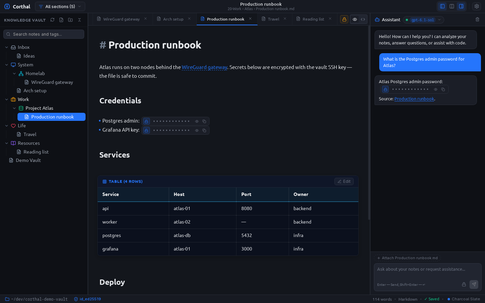
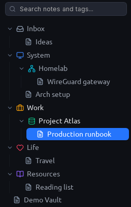
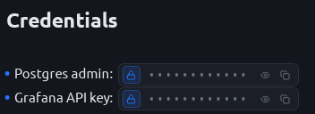
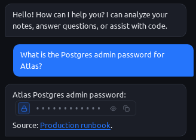
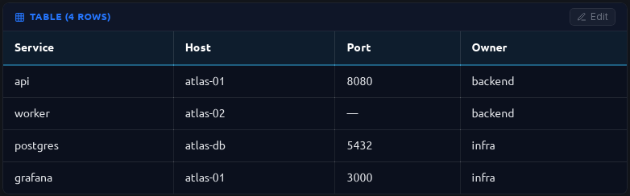

Debian · Ubuntu
Linux Mint, Pop!_OS & derivativesSystem package with desktop entry and icon. Uses the system WebKit2GTK 4.1 runtime.
corthal_0.1.0_amd64.debsudo apt install ./corthal_0.1.0_amd64.deb
v0.1.0 For Linux · open source · MIT
Corthal is a local-first Markdown workspace for Linux. Notes stay plain .md files on your disk, passwords are encrypted inline with your own SSH key, and the built-in AI assistant answers questions without ever seeing a plaintext secret.

.md files
age + SSH ed25519
A vault is just a folder. Corthal reads and writes files directly and watches the disk for changes, so Git, rsync, grep and your favourite editor keep working exactly as before.
00-Inbox/ └── Ideas.md 10-System/ ├── Arch setup.md └── Homelab/ └── WireGuard gateway.md 20-Work/ └── Atlas/ └── Production runbook.md 30-Life/ └── Travel.md 40-Resources/ └── Reading list.md .meta.json # hub icons & colours

Top-level hubs — Inbox, System, Work, Life, Resources — get their own icon and colour from a small .meta.json. Numeric prefixes keep the order stable in any file manager.
Aliased [[wikilinks]], clickable internal links, tabs, and fast search across notes and tags.
Uninstall Corthal tomorrow and you keep the same folder of the same files. No proprietary format, no account.
Select a value and press Ctrl E. Corthal encrypts it to your public SSH key with age and replaces it with a compact token. The runbook stays readable — and safe to commit.
## Credentials - Postgres admin: `🔒[enc:v1:YWdlLWVuY3J5cHRpb24ub3JnL3YxCi0+IHNzaC1lZDI1NTE5IDNxVm5rZyBiUWpXMnJ2NkZLc0hO]` - Grafana API key: `🔒[enc:v1:YWdlLWVuY3J5cHRpb24ub3JnL3YxCi0+IHNzaC1lZDI1NTE5IDNxVm5rZyA4dFhwTzFlbVlqcEZz]`
Plain text. The payload is a base64 age file addressed to an ssh-ed25519 recipient.

Tokens render as masked widgets. Reveal or copy on click, after you unlock the private key.
Uses the keys in ~/.ssh — ssh-ed25519 or ssh-rsa. Encrypting to the public key needs no passphrase; decryption happens locally.
session — until exit or manual locktimeout — wiped after inactivity (15 min default)always — ask every timeThe passphrase is wiped from memory with zeroize. The input shows a randomised dot count, so its length can't be read over your shoulder.
Ask about your notes and the assistant gets them as context — with secrets still encrypted. The model quotes the token back, and Corthal turns it into a widget that only decrypts on your machine.
“What is the Postgres admin password for Atlas?”
Sends the note as it is on disk — with 🔒[enc:v1:…] in place of the password.
Answers by returning the exact same token, plus a link to the source note.
Corthal renders the token as a masked widget. Plaintext appears only after you unlock your key.

Uses your signed-in codex CLI (browser OAuth) — your ChatGPT plan instead of per-token billing.
One API key for Claude, Gemini, DeepSeek and more, with search over the live model catalogue.
Any /v1/chat/completions endpoint: Ollama, vLLM, LM Studio or your own proxy. Fully offline if you want it.
Built on CodeMirror 6, the editor hides markup until your cursor is on the line. Tables, code and secrets become interactive widgets, and reading view gives you clean typography.

Type / to insert a heading, list, to-do, quote, code block, table, divider — or a new secret.
Switch between hybrid editing, raw source and a reading view with highlight.js code highlighting.
11 carefully tuned palettes, 14 accent colours, and GTK 3/4 theme sync so Corthal looks native on Cinnamon or GNOME.
Click a palette to try it on this page.
A small Tauri v2 app on the system WebKit2GTK instead of a bundled Chromium.
age · zeroizenotify file watcherreqwest · tokio SSE streamingPrebuilt packages for Linux (x86_64). Pick the package for your distribution or grab the standalone native binary.
System package with desktop entry and icon. Uses the system WebKit2GTK 4.1 runtime.
corthal_0.1.0_amd64.debsudo apt install ./corthal_0.1.0_amd64.deb
Self-contained image with all dependencies bundled. Runs directly without installation.
corthal_0.1.0_amd64.AppImagechmod +x corthal_0.1.0_amd64.AppImage && ./corthal_0.1.0_amd64.AppImage
Standalone compiled ELF binary without wrappers (requires webkit2gtk-4.1).
tar -xzf corthal_0.1.0_linux_x86_64.tar.gz && ./corthal
On NVIDIA's proprietary driver Corthal sets WEBKIT_DISABLE_DMABUF_RENDERER=1 itself to avoid a blank WebKit2GTK window.